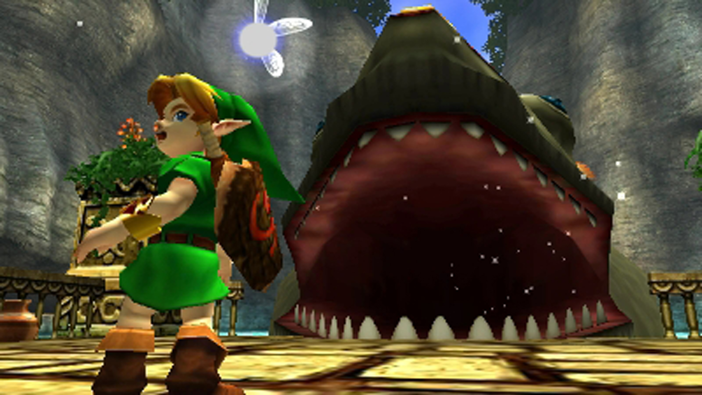
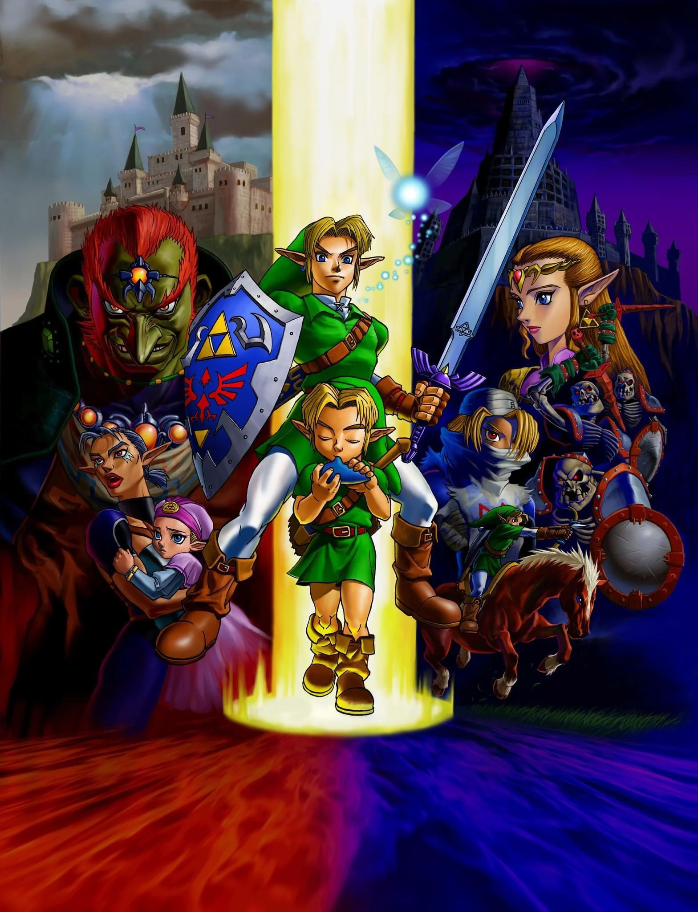

The game was developed by Nintendo EAD, led by five directors, including Eiji Aonuma and Yoshiaki Koizumi, produced by series co-creator Shigeru Miyamoto, and written by Kensuke Tanabe. Veteran Zelda series composer Koji Kondo composed the musical score. The player controls Link in the realm of Hyrule on a quest to stop the evil king Ganondorf by traveling through time and navigating dungeons and an overworld. The game introduced features such as a target-lock system and context-sensitive buttons, which have since become common in 3D adventure games. The player must play songs on an ocarina to progress.
Ocarina of Time was acclaimed by critics and consumers, who praised its visuals, sound, gameplay, soundtrack, and writing, and won several awards and accolades. It has been ranked by numerous publications as the greatest video game of all time and is the highest-rated game of all time on the review aggregator Metacritic. It was commercially successful, with more than seven million copies sold worldwide. In the United States, it received more than three times more pre-orders than any other game at the time.
The Nintendo 64 with 64DD attached
Development was migrated from the 64DD disk drive peripheral to cartridge due to the high data throughput of streaming 500 motion-captured character animations throughout gameplay. Initially targeting 16-megabytes, it was increased to 32 megabytes, as Nintendo's largest game ever. Early in development, the team had concerns about the data storage constraints of the cartridge; in the worst-case scenario, Ocarina of Time would follow a similar structure to Super Mario 64, with Link restricted to Ganondorf's castle as a central hub, using a portal system similar to the paintings that Mario uses to traverse the realm. An idea that arose from this stage of development, a battle with a doppelganger of Ganondorf that rides through paintings, was used as the boss of the Forest Temple dungeon.
While series co-creator Shigeru Miyamoto had been the principal director and producer of Super Mario 64, he was involved in the game's production and now in charge of five directors by acting as a producer and supervisor of Ocarina of Time. Different parts were handled by different directors, a new strategy for Nintendo EAD. Four or five initial teams grew over time, each working on different basic experiments, including scenario and planning, Link's actions, transforming classic 2D items into improved 3D form, camera experiments, motion capture, sound, special effects, and the flow of time. The dungeons were designed by Eiji Aonuma.
Although the development team was new to 3D games, assistant director Makoto Miyanaga recalled a "passion for creating something new and unprecedented". When creating Hyrule Castle's market, Miyamoto traveled to Germany for inspiration of its half-timbered architecture in Lower Franconia, spending a few weeks in northern Bavaria. Despite the setting being a "medieval tale of sword and sorcery", Miyamoto used the chanbara (samurai) genre of Japanese sword fighting as a model for the game's combat and was content with the positive worldwide reception. The development involved more than 120 people, including stunt performers used to capture the effects of sword fighting and Link's movement. Miyamoto initially intended Ocarina of Time to be played in a first-person perspective to enable players to take in the vast terrain of Hyrule Field better and let the team focus more on developing enemies and environments. The concept was abandoned once the idea of a child Link was introduced, and Miyamoto believed it necessary for Link to be visible on screen. Originally Z-targeting involved a generic marker, but Koizumi changed the design to that of a fairy to make it less "robotic". The fairy gained the name of the "Fairy Navigation System" amongst staff, and ultimately, this turned into the nickname "Navi", which in turn resulted in the "birth" of Navi's character. The "birth" of Navi was a pivotal point in the story's development.
Miyamoto wanted to make a game that was cinematic yet distinguished from films. Takumi Kawagoe, who creates cutscenes for Nintendo, said that his priority was to have the player feel in control of the action. To promote this instantaneous continuity of cinematic gameplay, the cutscenes in Ocarina of Time are completely generated with real-time computing on the Nintendo 64 and do not use prerendered full-motion video. Miyamoto's vision required this real-time architecture for the total of more than 90 minutes of cutscenes, regardless of whether the console had a vast medium like CD-ROM on which to store prerendered versions. Toru Osawa created the scenario for the game, based on a story idea by Miyamoto and Yoshiaki Koizumi. He was supported by A Link to the Past and Link's Awakening script writer Kensuke Tanabe. Miyamoto said the real-time rendering engine allowed his small team of 3 to 7 cinematic developers to rapidly adjust the storyline and to focus on developing additional gameplay elements even up to the final few months of development, instead of waiting on a repeated prerendering process.
Koji Kondo
Ocarina of Time's music was written by Koji Kondo, the composer in charge of music for most of the games in The Legend of Zelda series. In addition to characters having musical themes, areas of Hyrule are also associated with pieces of music. This has been called leitmotif in reverse—instead of music announcing an entering character, it now introduces a stationary environment as the player approaches. In some locations, the music is a variation of an ocarina tune the player learns, related to that area.
Beyond providing a backdrop for the setting, music plays an integral role in gameplay. The button layout of the Nintendo 64 controller resembles the holes of the ocarinas in the game, and players must learn to play several songs to complete the game. All songs are played using the five notes available on an ocarina, although by bending pitches via the analog stick, players can play additional tones. Kondo said that creating distinct themes on the limited scale was a "major challenge" but feels that the result is very natural. The popularity of Ocarina of Time led to an increase in ocarina sales.
Hero of Time, an orchestral recording of Ocarina of Time's score performed by the Slovak National Symphony Orchestra, was released by video game label Materia Collective in 2017. A vinyl version was published by iam8bit. It was nominated for "Best Game Music Cover/Remix" at the 16th Annual Game Audio Network Guild Awards.
After publication, Ocarina of Time was featured on a number of compiled lists of best or most influential games. It was ranked the greatest video game of all time by numerous publications including Computer and Video Games, Edge, Entertainment Weekly, GameTrailers, IGN, Next Generation, Nintendo Power, Game Informer, Slant, FHM, and PALGN. It also appeared on other lists of greatest games including those of Electronic Gaming Monthly and IGN. The game was placed second in Official Nintendo Magazine's "100 greatest Nintendo games of all time", behind only Super Mario Bros. Game Informer ranked it as its 11th favorite game of all time and described it as "untouchable". In May 2011, IGN held a tournament-style competition celebrating the 25th anniversary of the original The Legend of Zelda's release in which fans voted Ocarina of Time the greatest Zelda game; it beat Majora's Mask in the final round. Ocarina of Time has consistently been placed at number one in Edge's "top 100 games" lists: a staff-voted list in January 2000, a staff- and reader-voted list in July 2007, a list of "The 100 Best Games to Play Today" in March 2009, and a 2013 readers' poll selecting the 20 best games released since the magazine's launch in 1993. Edge concluded its 2009 list with: "Ocarina of Time is here in the list not because Nintendo had the power and wisdom to make a great game, but because it had the courage to make a unique one". In 2022, The Strong National Museum of Play inducted Ocarina of Time to its World Video Game Hall of Fame.
Multiple members of the video game industry have expressed how the game impacted them and the industry. Former Rockstar Games vice president of creativity Dan Houser stated in 2012 that "anyone who makes 3-D games who says they've not borrowed something from Mario or Zelda [on the Nintendo 64] is lying". Rockstar founder and Grand Theft Auto director Sam Houser also cited the game's influence, describing Grand Theft Auto III as "Zelda meets Goodfellas". Ōkami director Hideki Kamiya (Capcom, PlatinumGames) said that he had been influenced by Zelda when he developed Okami. Soul Reaver and Uncharted director, Amy Hennig (Crystal Dynamics and Naughty Dog), cited Zelda as an influence for the Legacy of Kain series, noting Ocarina of Time's influence on Soul Reaver
Dark Souls creator Hidetaka Miyazaki (FromSoftware) said that "The Legend of Zelda became a sort of textbook for 3D action games". Ico director Fumito Ueda (Team Ico) cited Zelda as an influence on Shadow of the Colossus. Darksiders director David Adams (Vigil Games) cited Zelda as an influence on his work. CD Projekt Red (The Witcher, Cyberpunk 2077) cited Zelda as an influence on The Witcher series, including The Witcher 3: Wild Hunt (2015). Final Fantasy and The 3rd Birthday director Hajime Tabata (Square Enix) cited Ocarina of Time as inspiration for the seamless open world of Final Fantasy XV.